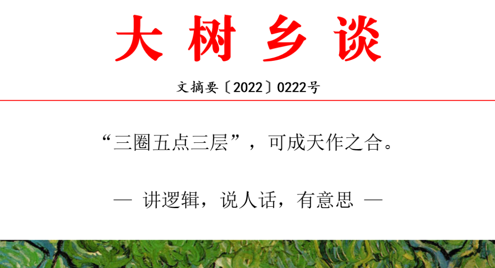
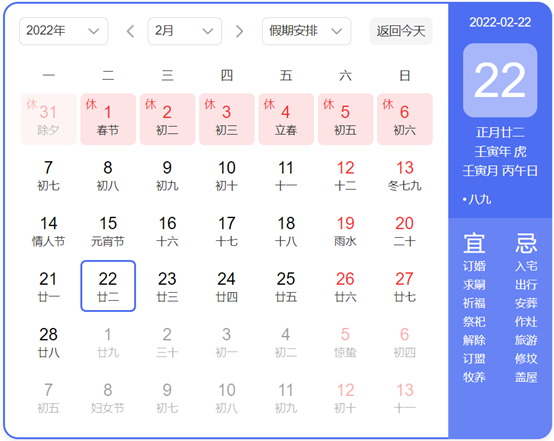

方法论：如何找到好伴侣？

今天是2022年2月22日，星期二，农历正月二十二，一个确实有点“2”的日子，当然也可以说是成双成对的日子。

今天，仅北京结婚登记预约已超过4700对，小镇也没能免俗，同样选择了这一天。 大家看到本文的时候，小镇已经领完证，正在小聚，感谢大家的相伴。 之前小镇在《越“穷”越买，越买越“穷”》一文，曾经谈到如何同对象达成默契，当时答应要写一写如何找到好伴侣，今天就来分享下。 由于每个人各自背景、经历、认知、偏好各不相同，没有一定之成规。所以小镇今天分享的是一个体系或者说思考方式，以此作为参考来衡量、判断，会更加系统一些，提高找到好伴侣的概率。
当今社会空前发达，人与人越来越独立，不同的人越来越生活在不同的信息茧房中，而丰富的物质和精神享受，更让人习惯于独处或者与特定的朋友们交流，更难以破圈，一方面认识的人少，另一方面各有坚持、争执越来越多。 所以，找到好的伴侣不同于找男女朋友，更关键的在于能否长久的相处下去，并且实现共赢。共赢不仅仅是物质的、抵抗风险的，同样也包括感情需求。 小镇的这个体系就是为了提高长久相处的可能性，总结为“三圈五点三层”。 “三圈”，指的是“婚配三圈”：情感、身体、社会属性。 情感仍然是第一位的。当然有很多婚姻是物质的或者没有感情的，但是从理想情况看，相信没有人不希望两情相悦。
古语讲“以利相交，利尽则散”，又讲“以势相交，势去则倾”，婚姻虽然不像国家或者外部合作那样极端看钱与势，但是以钱势为基础的并不牢靠，这就同“以色事人者，色衰而爱弛”一个道理。 所以小镇将情感列为第一。 但婚姻不是过家家，仿佛大海一舟，需要协力横渡，物质当然是必须的，这个物质首先就是身体，这是非常现实的事情。 大多数人最大的财富就是健康的身体，一个很简单的道理，如果能够一直保持健康，一辈子下来省下半辈子的钱问题不大。 比如小镇的姥爷，已经快90了，到现在牙一颗都没掉，每天喝4两白酒，开开心心无病无灾，这已经足够了。
健康的身体一定会让家庭和婚姻更加幸福，更何况身体的健康本身就和社会地位、收入挂钩。很难想象一个人身体都垮了，还如何去奋斗？ 更直接点，现在不孕不育率高的惊人，以至于已经多年没有发布，近些年丁克比例大增，并不仅仅是个人选择，其中未必没有身体方面的原因。具体小镇此前提过，不再赘述，大家可以查下男女身体健康变化情况。 这些都会产生巨大影响。 再然后就是社会属性。社会属性就是我们作为个体以外，由社会赋予的，包括教育、家庭背景、工作、朋友圈、个人名声等等，这就不展开了。
一般而言，只要感情、身体、社会属性基本匹配，画三个圈，两个人能被三个圈大体圈住，这个婚姻整体就是匹配的，要比一时冲动或者仅仅只考虑个别点稳固的多。 即使有一部分不重合，也可以进一步判断是否可以接受，又或者找到努力的方向。 当然，这三点还是太笼统了。身体和社会属性还好理解，这个感情实在让人难以捉摸，毕竟人心善变，而中国严重缺少成熟的情感教育，太多人是茫然的。不仅学校不教，家庭父母也不教，社会上那些所谓的“情感专家”太多是骗钱的。
所以还可以把情感进一步拆解，用一些更容易衡量的标准去体会，这就是“情感五点”，这是小镇师长总结的，小镇深以为然。 “情感五点”：门当户对、才智相当、两情相悦、同甘共苦、同心同德。 此五点，得其一者可以试着接触，得其二者可试着相处，得其三可谈婚论嫁，得其四为完美适配，五者皆全天作之合。 两个人刚开始接触，相亲也好、偶然相遇也罢，肯定无法完全了解。当其他外部身份、表现觉得可以之后，就可以看看这五点，尤其是门当户对和才智相当，只要可以就能试着相处。
毕竟感情不是游戏，不是说看指标可以就真的能成，还是要去试、去磨合。 当然在这个过程中一定有很多的冲突，需要磨合，而两个人对待磨合以及彼此的态度就决定能走到哪一步。而这五点就将感情中可能存在的感性冲突尽可能增加一些理性因素，防止因为冲动做出后悔的事。 这五点，后三者“两情相悦、同甘共苦、同心同德”，就不多说了。既是互相喜欢，又是能够协力对外，这个并不太容易，但好在本就不需要五点皆全。 世间婚姻能得其三的，已经是不错的婚姻了，在接下来的相处中是有可能得其四、甚至其五。
才智相当这个也相对好说，比如看看学历，谈话与接话的反应速度，平常工作或生活中接人待物，等等。 才智差距太大未必是好事，哪怕其他部分比如外貌加分实在太多，但才智的差距也会导致出现很多的麻烦，比如对事物的看法，比如面对问题的处置等等，进而也会影响到人生观、价值观、世界观三观，很多雷就是这么埋下的。 需要着重展开的就是“门当户对”，这也是最最重要的，一般而言“门当户对”的，沟通成本会大幅下降，也代表成长的经历和背景大致差不多，三观有更多重合，甚至很多人的婚姻单单这一点就够了。 因为“门当户对”的，一般情况下才智相当，家庭教育的好，起码“共苦”“同德”还是可以做到，只要两个人不反感，那“两情相悦”也大体做到了一半，加在一起也差不多相当于得其三的程度，结婚基本可行。
虽然这个折算比较粗糙，但对于本就有太多变量的感情和婚姻，已经有一定参考性了。 门当户对并不是简简单单的，同样有几个层次，层次越高，匹配度越高，其他几个点切合的可能性越大。 “三圈五点三层”中的“三层”指的就是“门当户对三个层次”。 第一层次，硬性 这一层双方家庭背景占六成，男女双方占四成。一定要重视双方家庭背景，婚姻不是两个人的事，而是两个家庭的事。 看什么呢？比如： 双方父母的职业，假如男方父母是公务员教授，女方父母是医生工程师，这就叫相称。
又比如双方家庭的收入、房产、学历等等，各方面折算，是否接近；也包括男女双方自己的对比，比如学历、外表、职业、收入等等。 不必担心这种对比是不是太复杂，在一定时期，对于这些的评估几乎是内化于心的，可能会有偏差，但是大体差不多。就好像靠谱的介绍人，牵线的双方基本差不多一样。 第二层次，软性。 这一层面就是看男女双方了，可以认为是兴趣爱好、生活方式等等。 比如一个人喜欢二次元，一个人极度厌恶，那除非有一个根本的妥协，否则很难不出现矛盾。
但这并不意味着两个人要有完全一样的爱好，关键是不要厌恶对方的爱好，并且能够尊重、让对方可以继续开心的享受就可以了，如果能够适当的参与对方的爱好甚至能够结合在一起，那就称得上完美了。 比如一个喜欢音乐，另一个喜欢电影；又或者一个喜欢小红书，另一个喜欢知乎；再或者一个温柔，一个阳光，等等。 相称并不是一致，人是不同的，互相尊重、彼此参与，找到更多的切合点和乐趣。 到了这一层次，已经足够找到很多的相称点了，除非重大变动和意外，否则长久相伴问题不大。
倘若能够再进一步达到最高的层次，那就更好了。 第三层次：精神 何为精神？就是从外面不容易看到的，比如思想认知，比如性格态度等等。 核心仍然不是一致，而是相称，不矛盾，或者说能够包容。 两个人精神层面高度一致当然是好的。但倘若另一个对这些不感兴趣，但是能够守住底线，彼此尊重，那也没问题，又或者一方能够包容另一方也可以。并不强求。 比如一个能够独立思考，另一个达不到独立思考的层次，但是能够做到不轻易随波逐流，这也可以了。
又比如一个人很有家国情怀，另一个虽然不太在意这些，更认同全人类，但能够守住大是大非，也是可以的。 类似的还有很多，比如有的人原则性很强，有的人宠辱不惊、平淡谦和，这也没什么，不过是调整好对内对外的态度、明确争执的处置就可以了。 其实这三个层次也有相应的词代称。 第一层满足硬性要求，那就是“合适”。 第二层满足软性和硬性要求，可称为“和谐”。 第三层倘若精神也契合，那称之为“神仙伴侣”也未尝不可。 就好比杨过和小龙女，各自的性情、经历、爱好、朋友圈等等都不相同，但并不影响两个人的感情。
两个人的相处、三个家庭的碰撞，难免有摩擦，需要的是相处的智慧，守住底线，抓大放小，将矛盾尽可能消化在最初、萌芽，更多寻找共同的追求，如此方可长久。 以上也是集体智慧的结晶，感谢师长、亲人还有朋友们，小镇以实际行动践行之，进而总结为这篇“三圈五点三层”，希望能给更多人以启发和幸福。 小镇今年正值本命年，终于踏入了人生新的阶段，虽晚不迟，更祝各位朋友们在新的一年里身体健康、万事如意！ 接下来，坚持分享至少20年的承诺不会变，小镇爱人也非常支持小镇继续做这件有意义的事。也希望大家能够一如既往的支持小镇，谢谢大家！
其他文章推荐
■ 改革何以成功？剜肉方可重生
如果喜欢，还请点赞、“在看”和关注吧 欢迎分享，让更多人发现“大树乡谈”